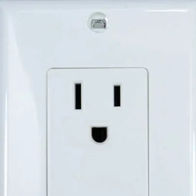

(This man is an absolute lunatic)
(Here's another paragraph because why not)
Here's a paragraph with
a break
This guy knows if things are swell, by the way
Here is another paragraph to show
what the "hr" tag does in HTML
Wanna see a "pre" element? I do!
Roses are Red
Walls are made of Plaster
The Children were Fast
But Big Bird was Faster
I'm bored. Let me change the font color.
Whoops! This is the background color!
This is a little better. Though hard to read with a white background. I'll go back to normal black and white.
Back to normal. I want to be a little fancier, though.
This is much fancier. But honestly, it would strain my eyes to look at this too long. Especially on a pixellated computer screen. Maybe if it's a little bigger?
WHOAH! TOO BIG! If I wanted this I would use an h1 element.
This feels okay... but it clashes with the rest of the website. You can see how I have a set theme before this?
I don't want to go back and make everything before centered. Too much effort.
Not to mention, this opens up the possibility of inserting ads along the sides. I hate ads.
Now time for some formatting.
Here's some BOLD.
This strong text is not bolded, you dimwit.
I want this to stand out, but not too much.
This is emphasized. What the heck is the difference between emphasizing something and italicising it?
This text is marked, and this is small. Whoops, I wasn't supposed to write this! This goes in its place.
Check the footnotes(there are actually none) and this is for how many molecules are in something. H2O.
What else can I do... Oh! Want to see some block quotes? These are made with >>> in markdown.
Some time ago, seated at ease upon a summer evening and taking a serene review of an indefensibly fortunate and happy life, I calculated that I must have committed at least fifty-three murders, and been concerned with hiding about half a hundred corpses for the purpose of the concealment of crimes; hanging one corpse on a hat-peg, bundling another into a postman's bag, decapitating a third and providing it with somebody else's head, and so on through quite a large number of innocent artifices of the kind.
-G.K. Chesterton
By the way, to put a quote without worrying about HTML's formatting, just use the "p" tag. John Henry Newman once said, To be deep in history is to cease to be Protestant
.
Now, I have no idea why you would use that... it is way simpler to just use the """ on the keyboard...
I wonder what the "address" tag does.
This is Nashadka Junior's website.If I wanted to just italicise something, I would use "i"! Or even "em"! Though maybe it looks different on another browser. I'm testing this on Librewolf, but if you're using a Chromium browser or maybe even another Gecko-based browser, it may look different. ¯\_(ツ)_/¯
Citation by Nashadka Junior.
So let me get this straight: There are at least FOUR different ways of italicising text. And THEY'RE ALL SUPPOSED TO MEAN SOMETHING DIFFERENT. You know what? I'll need to make an entirely different browser that makes use of all this fanciness in HTML. It will be almost certainly wasted effort. Speaking of fancy,
H e b r e w
Confused? Read it backwards :D
It's a little late right now, and my computer automatically turned on a blue light filter. I actually like the color of this, though, so I'm going to put that as my permanent background color. Not that it matters to you, since you will be used to it by the time you get to this point. It's called "OldLace", by the way. The background color, that is.